文字
背景
行間


SSH活動掲示板
2023年8月の記事一覧
 佐倉アクティブ「医療系分野について」
佐倉アクティブ「医療系分野について」
8月25日(金)に国際医療福祉大学との連携講座が開講されました。
参加したのは1年生の普通科14名・理数科2名、2年生の普通科8名、計24名です。
参加したのは1年生の普通科14名・理数科2名、2年生の普通科8名、計24名です。
前半は看護の実習を行いました。
看護師の仕事について学んだ後、ベッドで寝ている状態の患者さんの位置を動かすにはどうすれば良いか考える実習でした。
看護師の腰痛は大変問題になっており、看護師、患者さん(対象者)が互いに安全、安楽であることが求められるそうです。
看護師の仕事について学んだ後、ベッドで寝ている状態の患者さんの位置を動かすにはどうすれば良いか考える実習でした。
看護師の腰痛は大変問題になっており、看護師、患者さん(対象者)が互いに安全、安楽であることが求められるそうです。
後半は臨床検査について学び、血液に含まれるタンパク質の比色定量を行いました(ビウレット反応)。
マイクロピペットを普段使う機会がないため、生徒は扱いに戸惑っておりましたが熱心に取り組んでいました。
マイクロピペットを普段使う機会がないため、生徒は扱いに戸惑っておりましたが熱心に取り組んでいました。
看護行為を行う際に、主体は患者さんであることが大切だという考え方、臨床検査はどの病院で検査をしても同じデータであることが求められており、病院間で連携して正確なデータが出せるようにしていることが印象に残っています。


 SSH通信No.17
SSH通信No.17
SSH通信No.17を発行しました。
内容は金属学会第9回高校生・高専学生ポスターセッション、佐倉アクティブ「植物の成分を精製してみよう！」、第14回京進数学解法コンテストについてです。
下の画像をクリックすると見ることができます。
ぜひご覧ください。
過去のSSH通信一覧は以下のリンクからご覧ください。
 SSHサイエンスツアー~内浦山野外実習~3日目
SSHサイエンスツアー~内浦山野外実習~3日目
SSHサイエンスツア~内浦山野外実習~の3日目が終了しました。
実施場所は鴨川市の内浦山県民の森で、参加しているのは1年生理数科36名・普通科6名の計42名です。
昨日はサイエンスツアーの最終日で、安房小湊駅の近くの千葉大学海洋バイオシステム研究センターへ行きました。
千葉大学や地元漁協の許可を得て、研究用の海岸エリアへ入れていただきました。
午前から昼過ぎにかけて、岩礁水棲生物の観察、潮の満ち引きの仕組みの学習、岸壁の地層の観察などを行いました。
千葉大学や地元漁協の許可を得て、研究用の海岸エリアへ入れていただきました。
午前から昼過ぎにかけて、岩礁水棲生物の観察、潮の満ち引きの仕組みの学習、岸壁の地層の観察などを行いました。
昼食後はバスに乗り、佐倉高校へ戻ってサイエンスツアーが終了しました。
長い距離を歩き、山や崖を登り、とても体力を使うツアーでしたが、本や教科書を読んでいるだけでは味わえない体験や、様々な発見のある刺激的な3日間となりました。
長い距離を歩き、山や崖を登り、とても体力を使うツアーでしたが、本や教科書を読んでいるだけでは味わえない体験や、様々な発見のある刺激的な3日間となりました。
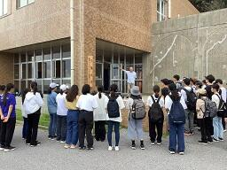 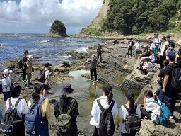
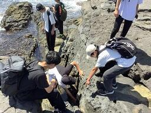 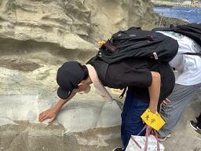
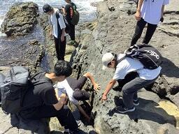 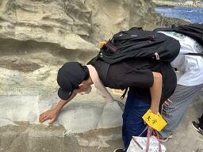
サイエンスツアー1日目の様子は以下のリンクからご覧ください。
 学校説明会SSH体験授業の報告
学校説明会SSH体験授業の報告
2日間の学校説明会でSSH体験授業を行いました。

8月22日(火)・23日(水)の2日間で午前・午後に分けて計4回の学校説明会が実施されました。
理科館1階の化学実験室で中学生と一緒に簡単な参加型の実験を行い、その現象がなぜ起こるのかを考えてもらいました。
理科館1階の化学実験室で中学生と一緒に簡単な参加型の実験を行い、その現象がなぜ起こるのかを考えてもらいました。
本校のSSH授業の一端に触れてもらうことができました。
8月26日(土)10:00~16:00には千葉工業大学で理数科をもつ高校が集まって実験等行うイベント「高校理数科進学フェア」も開催されます。
佐倉高校のブースも出しますので、ぜひご参加ください。
申し込み不要、参加費無料です。
佐倉高校のブースも出しますので、ぜひご参加ください。
申し込み不要、参加費無料です。
SSHサイエンスツアー~内浦山野外実習~2日目
SSHサイエンスツア~内浦山野外実習~の2日目を無事終えました。
実施場所は鴨川市の内浦山県民の森で、参加しているのは1年生理数科36名・普通科6名の計42名です。
本日は山道をだいたい14~15km、ひたすら歩き続けました。
午前は地学実習で、地層を観察し、触れて粒の大きさや質の違いを感じとり、スケッチの練習もしました。
昼食時には天候が崩れたこともあり、妙法生寺の住職さんのご厚意で、お寺の境内を利用させていただきました。
午後は生物実習で、葉の特徴の捉え方を学び、様々な葉を観察し、宿に戻ってから班ごとに教え合い学習を行いました。
午前は地学実習で、地層を観察し、触れて粒の大きさや質の違いを感じとり、スケッチの練習もしました。
昼食時には天候が崩れたこともあり、妙法生寺の住職さんのご厚意で、お寺の境内を利用させていただきました。
午後は生物実習で、葉の特徴の捉え方を学び、様々な葉を観察し、宿に戻ってから班ごとに教え合い学習を行いました。
夕食後には地学分野の学習会で、前半は大陸から分離してできた日本列島の成り立ちや千葉県の成り立ちについて学習しました。
後半は星座や惑星軌道について学習し、屋外に出て天体観測を行いました。
後半は星座や惑星軌道について学習し、屋外に出て天体観測を行いました。
さらに、その後は午後の生物実習で扱った約20種類の葉っぱに関するテストが行われました。
明日は海岸へ出て、海岸生物観察実習を行う予定です。
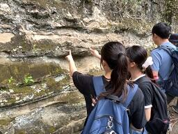


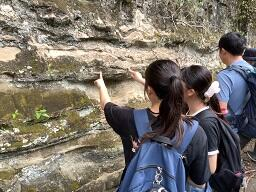
サイエンスツアー1日目の様子は以下のリンクからご覧ください。
https://cms2.chiba-c.ed.jp/sakura-h/blogs/blog_entries/view/47/8555f6d209664bb1da6a8e10b03e8e20?frame_id=212
SSHサイエンスツアー~内浦山野外実習~1日目
本日からSSHサイエンスツア~内浦山野外実習~が始まりました。
実施場所は鴨川市の内浦山県民の森で、参加しているのは1年生理数科36名・普通科6名の計42名です。
午前中に佐倉高校から内浦山県民の森まで移動し、到着後植物の観察をしながら歩いて、キャンプ場付近で昼食をとりました。
午後は斜面林に入り、班ごとにコドラートを作成して、樹木の座標や高さ、樹種などを確認する森林調査実習を行いました。
途中雨が降り紙に記録がとれないハプニングもありましたが、各班様々な工夫をして記録を残していました。
その後場所を移動し、急な斜面を登ってモミ遺存林を観察しに行きました。
宿に戻って夕食をとったあとは学習会で、午後の森林調査実習の結果を班ごとに模造紙にまとめました。
明日は地学実習と生物実習を行う予定です。
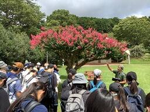
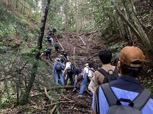
実施場所は鴨川市の内浦山県民の森で、参加しているのは1年生理数科36名・普通科6名の計42名です。
午前中に佐倉高校から内浦山県民の森まで移動し、到着後植物の観察をしながら歩いて、キャンプ場付近で昼食をとりました。
午後は斜面林に入り、班ごとにコドラートを作成して、樹木の座標や高さ、樹種などを確認する森林調査実習を行いました。
途中雨が降り紙に記録がとれないハプニングもありましたが、各班様々な工夫をして記録を残していました。
その後場所を移動し、急な斜面を登ってモミ遺存林を観察しに行きました。
宿に戻って夕食をとったあとは学習会で、午後の森林調査実習の結果を班ごとに模造紙にまとめました。
明日は地学実習と生物実習を行う予定です。
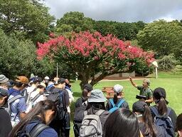
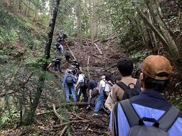
学校説明会SSH体験授業
明日からの学校説明会でSSH体験授業のコーナーを設置します。
場所は理科館1階の化学実験室です。
昨年度は2日間でこの体験授業に中学生・保護者合わせて約380名も来てくれました。
SSH講座や科学的な探究活動に興味がある方はぜひお越しください。
昨年度のSSH体験授業の様子は、以下のリンクからご覧ください。
https://cms2.chiba-c.ed.jp/sakura-h/blogs/blog_entries/view/47/0319d4365758ca637ed9a3a7cddf5078?frame_id=212
令和5年度SSH生徒研究発表会
8/8(火)～8/10(木)のSSH生徒研究発表会に参加しました。
この発表会は文部科学省と国立研究開発法人科学技術振興機構(JST)の主催で、全国のSSH指定校等の生徒が日頃の研究成果を発表し、生徒の科学技術に対する興味・関心を一層喚起するとともに、SSHの成果を広く発信することを目的としています。
会場は神戸国際展示場で、参加したのは理数科の3年生3名です。
1日目は現地への移動・発表準備日で、2日目はポスター発表、3日目は代表校による全体発表や表彰式でした。
本校は数学・情報分野で
この発表会は文部科学省と国立研究開発法人科学技術振興機構(JST)の主催で、全国のSSH指定校等の生徒が日頃の研究成果を発表し、生徒の科学技術に対する興味・関心を一層喚起するとともに、SSHの成果を広く発信することを目的としています。
会場は神戸国際展示場で、参加したのは理数科の3年生3名です。
1日目は現地への移動・発表準備日で、2日目はポスター発表、3日目は代表校による全体発表や表彰式でした。
本校は数学・情報分野で
「点と曲線との距離に関する考察」
のポスター発表をしました。
他校の発表もたくさん見に行き、他校の生徒や教員、大学の先生など、様々な人と交流し、議論し、充実した発表会になりました。


植物の成分を精製してみよう！
令和5年7月24日(月)の午後、佐倉市の株式会社常磐植物化学研究所において
「植物の成分を精製してみよう！」をテーマに佐倉アクティブSSH講座が開催されました。
1年生18名(普通科11名、理数科7名)、2年生普通科2名の計20名が参加し、
実験実習、ハーブ園研修、施設見学を行いました。
「植物の成分を精製してみよう！」をテーマに佐倉アクティブSSH講座が開催されました。
1年生18名(普通科11名、理数科7名)、2年生普通科2名の計20名が参加し、
実験実習、ハーブ園研修、施設見学を行いました。
実験実習では、カシスに含まれている色素であるアントシアニンを
カラムクロマトグラフィーによる樹脂精製を行いました。
4つの班に分かれ各班に一人、スタッフの方についていただき、
アドバイスをもらいながら実習を進めることができ、すべての班が無事にアントシアニンを抽出精製できました。
カラムクロマトグラフィーによる樹脂精製を行いました。
4つの班に分かれ各班に一人、スタッフの方についていただき、
アドバイスをもらいながら実習を進めることができ、すべての班が無事にアントシアニンを抽出精製できました。
ハーブ園では、抗酸化作用があり、目に良いとされるブルーベリーや
天然甘味料として知られ砂糖よりも低カロリーであるステビア、
料理や精油として利用されているバジルなどに触れたり、においや味を確認しながら研修しました。
天然甘味料として知られ砂糖よりも低カロリーであるステビア、
料理や精油として利用されているバジルなどに触れたり、においや味を確認しながら研修しました。
施設見学では、実習で行った手法が実際にはどのような工程で利用されているかや
原料から製品として出荷されるまでの一連の流れを説明していただきました。
午後の4時間ほどの講座でしたが、とても充実した講座になりました。
原料から製品として出荷されるまでの一連の流れを説明していただきました。
午後の4時間ほどの講座でしたが、とても充実した講座になりました。
 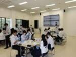
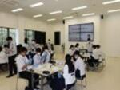 


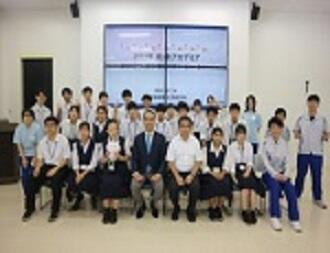
 シンガポールオンライン交流会
シンガポールオンライン交流会
理数科の2年生がオンラインでシンガポールの高校生と交流会を行いました。
交流会は7月31日(月)の午後に行われ、理数科の2年生が様々な会場に分かれ、各自の端末でzoomを利用して参加しました。
相手校はシンガポールのSt. Joseph's Institutionで、今年度のサイエンスツアーで訪れる高校です。
訪問する前にオンラインで複数回交流を深め、訪問した際に対面でもスムーズに交流を行う目的です。
今回はまずお互いに自己紹介を行い、
その後相手校の生徒の研究発表を聞いてディスカッションしました。
本校の研究発表は次回8月21日(月)のオンライン交流会で行う予定です。
交流会は7月31日(月)の午後に行われ、理数科の2年生が様々な会場に分かれ、各自の端末でzoomを利用して参加しました。
相手校はシンガポールのSt. Joseph's Institutionで、今年度のサイエンスツアーで訪れる高校です。
訪問する前にオンラインで複数回交流を深め、訪問した際に対面でもスムーズに交流を行う目的です。
今回はまずお互いに自己紹介を行い、
その後相手校の生徒の研究発表を聞いてディスカッションしました。
本校の研究発表は次回8月21日(月)のオンライン交流会で行う予定です。